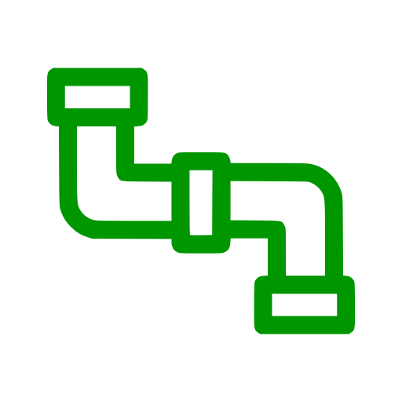

<section id="any_explained" style="background-color: rgb(240, 240, 240)">
    <div class="container">
        <div class="row align-items-start">
            <div class="col-lg-3 col-md-3 col-sm-6 col-xs-6 text-center">
                <i class="fa fa-4x wow fadeIn text-primary">
                    
                </i>
                <h3>Any Code</h3>
                <p class="text-muted">Take any pre-existing code that you'd like to include.
                    For example, a well known TensorFlow model,
                    and some useful functions from both PyTorch and NumPy libraries</p>
            </div>
            <div class="col-lg-3 col-md-3 col-sm-6 col-xs-6 text-center">
                <i class="fa fa-4x wow fadeIn text-primary" data-wow-delay=".1s">
                    
                </i>
                <h3>Any Pipeline</h3>
                <p class="text-muted">Choose any framework for writing your higher level pipeline, including dataset curatation, data loading, training, analytics and logging etc.</p>
            </div>
            <div class="clearfix visible-sm-block visible-xs-block"></div>
            <div class="col-lg-3 col-md-3 col-sm-6 col-xs-6 text-center">
                <i class="fa fa-4x wow fadeIn text-primary" data-wow-delay=".2s">
                    
                </i>
                <h3>Any Backend</h3>
                <p class="text-muted">Choose any backend framework which should be used under the hood, for running this entire pipeline</p>
            </div>
            <div class="col-lg-3 col-md-3 col-sm-6 col-xs-6 text-center">
                <i class="fa fa-4x wow fadeIn text-primary" data-wow-delay=".3s">
                    
                </i>
                <h3>Any Hardware</h3>
                <p class="text-muted">Freedom of choice for the backend opens up freedom of choice for the hardware. Choose the most appropriate device or combination of devices for your needs.</p>
            </div>
        </div>
    </div>
</section>